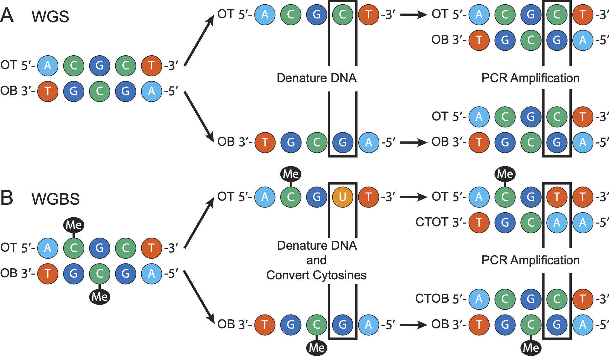

Duplicate Marking Methodology
1 Differences between WGS and WGBS Duplicate Marking
Duplicate reads primarily come from two sources: polymerase chain reaction (PCR) amplification and optical duplicates. Optical duplicates arise from the sequencer splitting a single cluster into two or more clusters (see the description in the paper for where these clusters come from). While dupsifter is able to handle optical duplicates, they affect WGS and WGBS datasets in the same way. Therefore, this section will focus on PCR duplicates and the differences in duplicate marking reads from these two technologies.
PCR amplification is frequently used in WGS and WGBS to increase the amount of input DNA, which increases the chance of a DNA fragment being sequenced, but incurs a cost of some fragments being sequencing more than once. PCR duplicates are the result of multiple copies of the same fragment being sequenced. For WGS experiments, PCR proceeds as shown in Panel A of Figure 1. On the other hand, WGBS experiments include an additional step before PCR amplification is run. After the DNA is denatured, sodium bisulfite is added to the solution, converting unmethylated cytosines into uracils, which results in four distinct strands of DNA (see Panel B of Figure 1). These four strands are: one strand deriving from the original top (OT), one deriving from the original bottom (OB), and the two complements of these strands (CTOT and CTOB, respectively). This additional step means there are two distinct copies of DNA for a given DNA fragment in WGBS versus only one in WGS. Therefore, for WGBS experiments, we must distinguish between reads coming from the OT and OB strands at the same location and true PCR duplicates.
dupsifter handles these differences by factoring in the bisulfite strand (OT/CTOT or OB/CTOB) when determining if a read is a duplicate. In the case where the user is running in WGS mode, dupsifter treates all reads as coming from the same original strand.

dupsifter paper.2 Duplicate Definition
At its most basic, duplicates are those that match in all of the following categories (descriptions below):
- Read 1 Bin Number
- Read 1 Bin Position
- Read 2 Bin Number
- Read 2 Bin Position
- Read 1 Leftmost in Pair?
- Orientation
- Single-end?
- Cell barcode
2.1 Descriptions
- Read 1/2 Bin Number: Bin number determination described in Section 3.
- Read 1/2 Bin Position: Position in bin described in Section 3.
- Read 1 Leftmost in Pair?: If paired-end, is read 1 the leftmost read? If single-end, then this is always false (0).
- Orientation: How reads are oriented, which can be one of four possibilities (given as read1-read2): forward-forward, reverse- reverse, forward-reverse, reverse-forward. For reference, forward-reverse is generally considered a “proper pair.”
- Single-end?: Is the read a single-end read?
- Cell barcode: Cell barcode for read. More details given in Section 5.
2.2 Notes
Duplicates are found for single-end and paired-end reads using the same set of categories, with a few minor notes. First, single-end reads and paired-end reads with one unmapped read in the pair are always considered to be “read 1” (read 2 is set to default values). The orientation can then be used to distinguish between reads on the forward and reverse strands. Second, the bin number and position are calculated individually for reads 1 and 2 in paired-end mode, which allows split and discordant reads to be properly marked as duplicates.
With respect to which read (or read pair) is chosen as the “non-duplicate,” dupsifter follows the likes of samblaster and deduplicate_bismark. Rather than choosing the read with the highest quality (which usually entails using the base qualities to determine “quality”), dupsifter sets the first read found in a set of duplicates as the non-duplicate. The authors of samblaster showed that choosing the first read, instead of the highest quality read, has little impact on the quality of reads going into downstream analyses. Further, it requires only one pass through the data, instead of two passes, which is required for methods that select the highest quality read.
Astute observers may have noticed there is no reference to bisulfite strand in the duplicate definition. This is a byproduct of the technical implementation of dupsifter and is due to the bisulfite strand being handled separately from the explicit definition of a duplicate.
3 Reference Padding and Binning
Padding the length of chromosomes and other contigs is needed due to the possibility of soft clipped reads. dupsifter uses the unclipped read length in order to determine duplicates, which requires subtracting or adding the number of clipped bases from the start or end position, respectively. In the extreme case where a heavily clipped read is located at the start or end of a chromosome/contig, the adjusted position can occur outside of the defined chromosome bounds. Therefore, the maximum read length (set by the -l/--max-read-length) is added to each end of the chromosome/contig to account for this possibility. In the instance where a read is longer than the maximum read length, the code will produce an error requesting the user to rerun with a longer maximum read length set.
Generally, duplicate marking tools bin the genome based on the number of contigs (1 contig = 1 bin). For genomes with a small number of contigs, this isn’t a problem. However, for genomes with a large number of contigs (e.g., plant genomes), this becomes impractical. dupsifter, on the other hand, takes a different approach (based on the solution proposed in this issue raised on samblaster’s GitHub page). In this method, the entire genome is combined into one “supercontig”, which is then divided into bins of roughly equal size. By way of example, the human genome from GENCODE contains over 600 contigs (both primary chromosomes and additional contigs). Rather than having 600+ bins, there are approximately 25 bins using this method. With respect to the read position, by combining the contigs in the order listed in the SAM header, an offset from the start of the first contig can be calculated for each additional contig. This offset includes padding at the start and end of each previous contig (described above), plus the padding at the start of the current contig. By adding the position on the contig (using the read’s CIGAR string) to the offset, the specific bin the read falls into can be determined, as well as the position within the bin itself.
4 Bisulfite Strand Determination
The bisulfite strand for a read (both single-end and paired-end reads) is determined with the following priority:
- bwa-meth flag (
YD) - bsmap flag (
ZS) - bismark flag (
XG) - Inference from number of C→T (
nCT) and G→A (nGA) substitutions (OT/CTOT ifnCT >= nGA, else OB/CTOB)
For paired-end reads, the bisulfite strand is individually determined for both read 1 (bss1) and read 2 (bss2), then any differences between the two are resolved.
- If
bss1 == bss2, thenbss1is used. - If only
bss1(orbss2) is found, thenbss1(orbss2) is used. - If neither
bss1orbss2are found, then assume OT/CTOT. - If both
bss1andbss2are found, butbss1 != bss2, then the sum of the base qualities is used to determine which to use. Ifsum(read 1 base qualities) > sum(read 2 base qualities), thenbss1is used, elsebss2is used.
5 Cell Barcodes
Cell barcodes are commonly used in single-cell sequencing in order to multiplex many cells into a pool, primarily to increase throughput and to overcome sequencer input requirements. It also allows for streamlined processing, as many cells can be processed at once. These barcodes must be included when defining reads that are duplicates as two fragments may be from the same location in the genome, but come from two different cells. By default, dupsifter does not look for barcodes; however, an option is available (-B/--has-barcode) when duplicate marking data with barcodes. dupsifter handles barcodes in the following way:
- Looks for the
CBSAM tag. - If not found, looks for the
CRSAM tag. - If neither are found, parse the read name. The barcode must be the last element in the name, where the elements are separated by
:. - If a barcode can’t be found in any of these locations, a warning is printed and a default value is used (thereby negating any benefits of using barcodes).
In all three cases, up to 16 bases are packed into a single integer for defing the barcode. If your barcode is longer than 16 bases, it will be truncated to a length of 16. Additionally, separators (only + and - are allowed) are treated as N’s and count towards the maximum length of 16.